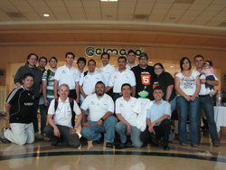
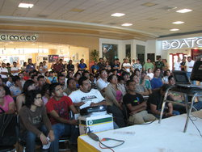

GULAG
Grupo de Usuarios de GNU/Linux de la Laguna.
Inicio
FLISOL 2012
El sábado 28 de abril en Plaza Cuatro Caminos se llevará a cabo el Festival Latinoamericano de Instalación de Software Libre 2010 (FLISoL) organizado por sexto año consecutivo por el Grupo de Usuarios de GNU/Linux de La Laguna (GULAG).
¿Qué es el FLISOL?
El FLISoL es el evento de difusión de Software Libre más grande en Latinoamérica. Se realiza desde el año 2005 y desde el 2008 se adoptó su realización el 4to Sábado de abril de cada año.
Su principal objetivo es promover el uso del software libre, dando a conocer al público en general su filosofía, alcances, avances y desarrollo.

FLISOL 2011 Reseña

El pasado 9 de abril de 2011 se llevó a cabo el Festival Latinoamericano de Instalación de Software Libre (FLISOL), organizado por cuarta ocasión por el GULAG y por primera vez en Plaza Cuatro Caminos.



Cabe destacar que al realizar el evento en un paseo comercial, se logró comunicar la alternativa del Software Libre a un número mucho mayor de personas que en ocasiones anteriores. Con ese fin, se repartieron mil trípticos con información del Software Libre a los visitantes.


FLISOL 2011
El sábado 28 de abril en Plaza Cuatro Caminos se llevará a cabo el Festival Latinoamericano de Instalación de Software Libre 2010 (FLISoL) organizado por sexto año consecutivo por el Grupo de Usuarios de GNU/Linux de La Laguna (GULAG).
¿Qué es el FLISOL?
El FLISoL es el evento de difusión de Software Libre más grande en Latinoamérica. Se realiza desde el año 2005 y desde el 2008 se adoptó su realización el 4to Sábado de abril de cada año.
Su principal objetivo es promover el uso del software libre, dando a conocer al público en general su filosofía, alcances, avances y desarrollo.

Cuarto Congreso Internacional de Software Libre
Damos nuestro agradecimiento a los asistentes, a los ponentes, al ITESM Campus Laguna como sede, a los patrocinadores y a los miembros del GULAG por lograr que el IV Congreso cumpliera sus expectativas de difundir conocimiento, experiencia y software libre.
FLISOL 2010 Reseña
El pasado sábado 24 de abril se llevó a cabo el Festival Latinoamericano de Instalación de Software Libre FLISOL que por cuarto año consecutivo organiza el GULAG. El evento tuvo como sede nuevamente la Universidad Autónoma de Coahuila (UAC), en colaboración con Universidad Autónoma de La Laguna (UAL), la Universidad Tecnológica de Torreón (UTT) y el NIIT Laguna.

FLISOL 2010
El sábado 24 de abril en la Universidad Autónoma de Coahuila (UAC) se llevará a cabo el Festival Latinoamericano de Instalación de Software Libre 2010 (FLISOL) organizado por cuarto año consecutivo por el Grupo de Usuarios de GNU/Linux de La Laguna (GULAG).
¿Qué es el FLISOL?
El FLISOL (Festival Latinoamericano de Instalación de Software Libre) es el evento de difusión de Software Libre más grande en Latinoamérica. Se realiza desde el año 2005 y su principal objetivo es promover el uso del software libre, dando a conocer al público en general su filosofía, alcances, avances y desarrollo.
Para tal fin, las diversas comunidades locales de software libre (en cada país, en cada ciudad/localidad), organizan simultáneamente eventos en los que se instala de manera gratuita y totalmente legal, software libre en las computadoras que llevan los asistentes.
Además, se ofrecen charlas, ponencias y talleres, en torno al software libre.

FOSS 1.0
El Primer Congreso Iberoamericano de Software Libre se llevará acabo los días 30 de noviembre y 1 de diciembre de 2009, en la ciudad de Zacatecas, México. El marco del evento será el Auditorio de la Unidad Académica en Estudios del Desarrollo de la Universidad Autónoma de Zacatecas.
Ponentes
Richard Stallman
Free Software Foundation
El Movimiento del Software Libre y el Sistema Operativo GNU/Linux
Miguel Angel López
GULEV
Gerónimo Orozco ‘Patux’
Novell, Inc.
De la comezon, a la vida real: experiencias desarrollando y utilizando opensource
Juantomás García
Hispalinux
20 años de software libre y sus efectos colaterales
Fernando Javier Magariños Lamas ‘La Mancha’
Cámara de Diputados
Honorable Congreso de La Unión
El empleo de software libre en la administración pública
Maximino Gerardo Luna Estrada
Unidad Académica en Estudios del Desarrollo, Universidad Autónoma de Zacatecas
Aplicaciones en GNU/Linux, una visión práctica
José Masdeu
Gobierno de la Republica Argentina, Poder Judicial de la Nacion
FLOSS en el Gobierno de la República Argentina. Casos de exitos en el Poder Judicial de la Nación
Corinto Meffe
Ministerio de Planeación, Presupuesto y Administración
Gobierno de Brasil
Innovaciones Tecnológicas con FLOSS en el Gobierno de Brasil
Henry Rivero
Migración a SF en el Estado Venezolano
Experiencia de Migración a SL en el Estado Venezolano (casos de éxito, proyectos bandera, lecciones aprendidas)
Max de Mendizábal
Dirección General de Educación Superior para Profesionales de la Educación
Gerardo Flores
Red Hat México
Modelo de negocio con código abierto, más allá del sistema operativo
Mauricio Haro
Subsecretaría de Informática de la Presidencia de la República del Ecuador
Estrategia de Migración a Software Libre en la Administración Pública Central de Ecuador
Guillermo Valdés Lozano
GULAG
Virtualización con QEmu
Lugar
Edificio de Doctorado en Estudios del Desarrollo, detrás de Biblioteca Central
Av. Preparatoria S/N, Col. Loma Dorada,
Apartado postal 3-138, C.P. 98065.
Zacatecas, Zac., México.
Contacto
Unete a nuestra lista de correo, o siguenos en alguna de nuestras redes sociales.
Lista de Correo
Una vez dento puedes enviarnos un mensaje a gulagmx@googlegroups.com
 @gulagmexico
@gulagmexico
 Comunidad de Gulag
Comunidad de Gulag{kind=link}
{kind=link}